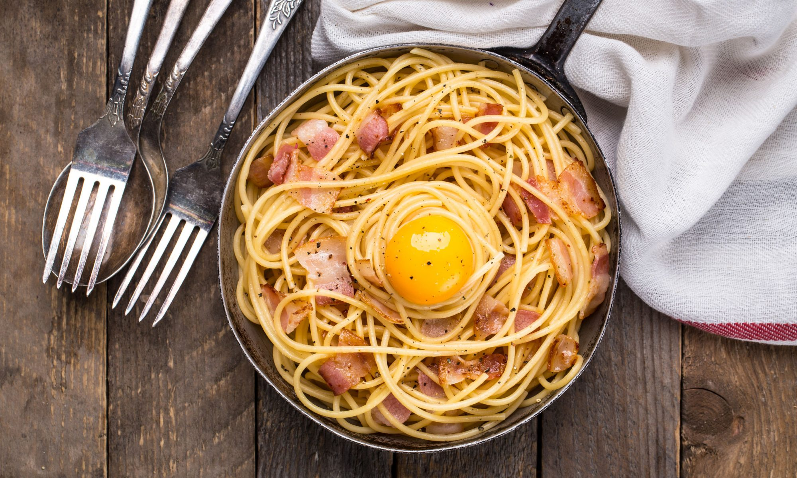

Паста Карбонара по-домашнему
Аутентичный рецепт римской пасты без сливок. Секрет идеального шелковистого соуса - правильная температура желтков, выдержанный пармезан и ароматный вытопленный бекон.
Шеф Марко Росси
Опубликовано 12 ноября 2026 • 1.2k просмотров
Пошаговый процесс
Поставьте большую кастрюлю с подсоленной водой на сильный огонь. Опустите спагетти (400 г) в кипящую воду и варите до состояния al dente (примерно на 1-2 минуты меньше времени, указанного на упаковке). Сохраните 100 мл воды из-под пасты перед сливом.
Нарежьте бекон или панчетту небольшими брусочками. Разогрейте сухую сковороду на среднем огне и обжаривайте бекон 5-7 минут до появления хрустящей золотистой корочки. Снимите сковороду с прямого сильного огня.
В отдельной глубокой миске взбейте венчиком 3 яичных желтка и 1 целое яйцо. Добавьте мелко натертый пармезан (50 г) и свежемолотый черный перец. Перемешайте до состояния густой однородной пасты.
Переложите горячие спагетти в сковороду к теплому бекону, перемешайте. Влейте яично-сырную смесь, быстро и энергично перемешивая, чтобы яйца не свернулись, а образовали кремовый соус. При необходимости добавьте немного сохраненной горячей воды. Подавайте немедленно, посыпав пармезаном и черным перцем!
Видео-инструкция
Смотреть мастер-класс по приготовлению карбонары
Длительность: 6 минут 40 секунд • Full HD 1080pОтзывы и комментарии
2Ингредиенты
4 порцииОтмечайте чекбоксом купленные или подготовленные продукты:
Готовила вчера на ужин. Получилось с первого раза, соус не свернулся! Главное снять сковороду с огня перед вливанием желтков.
Наконец-то настоящий рецепт без сливок! Вкус просто потрясающий, вся семья в восторге.